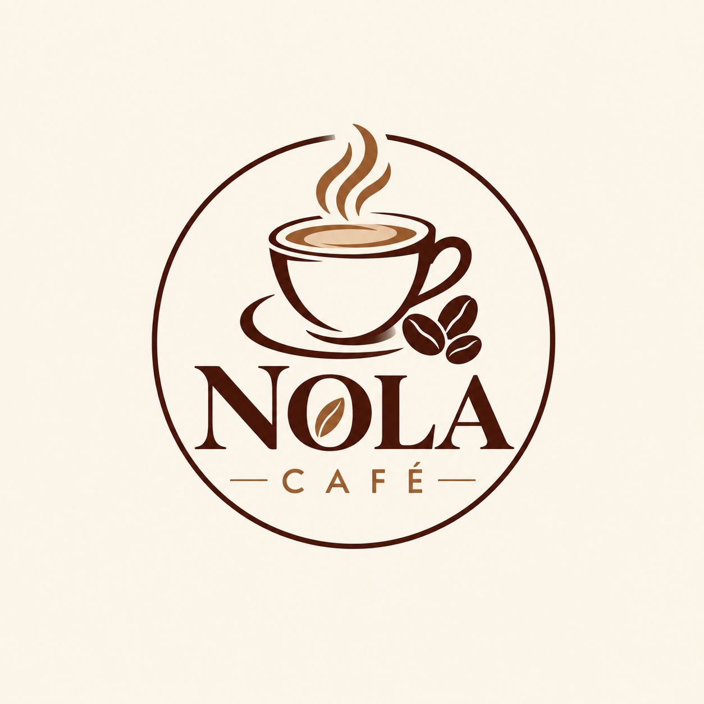
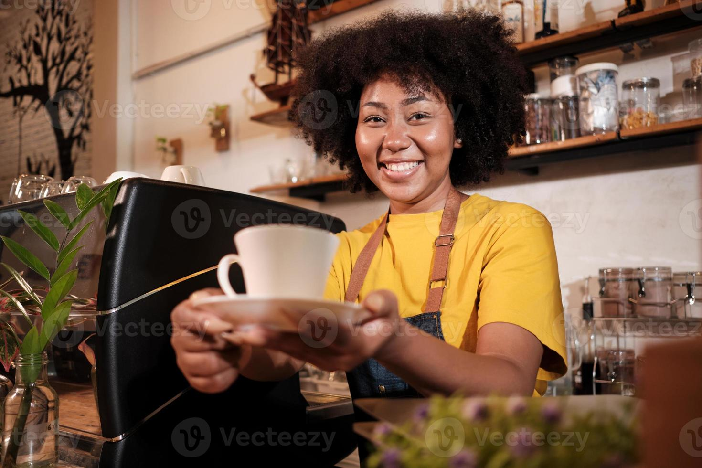

Owner
Anam Selekane – Oversees daily operations and customer service.

Nola Café is a proudly local business in Walmer, Port Elizabeth. It was started in 2018 and is owned by Anam Selekane. Nola Café was created with a passion for bringing people together over great food, desserts and exceptional coffee. Over time, the café has grown into a welcoming community where customers can relax, connect and enjoy freshly prepared meals and beverages in a friendly atmosphere.
Our mission is to provide affordable, high-quality food and beverages while creating a warm and welcoming environment for our customers and a positive place to work.
Our vision is to offer outstanding quality food, drinks and customer experiences, creating a strong presence where customers can feel at home while far from home.
Our target audience is anyone who wants good food and drinks and a place where they can relax, recharge, connect with others or work in a comfortable environment.
Anam Selekane – Oversees daily operations and customer service.
Chantel Smith – Helps prepare meals and create menu specials.
Sipho M. – Manages daily operations and staff scheduling.

Ayanda S. – Prepares coffee and other beverages.
Lebo D. – Provides friendly and efficient customer service.